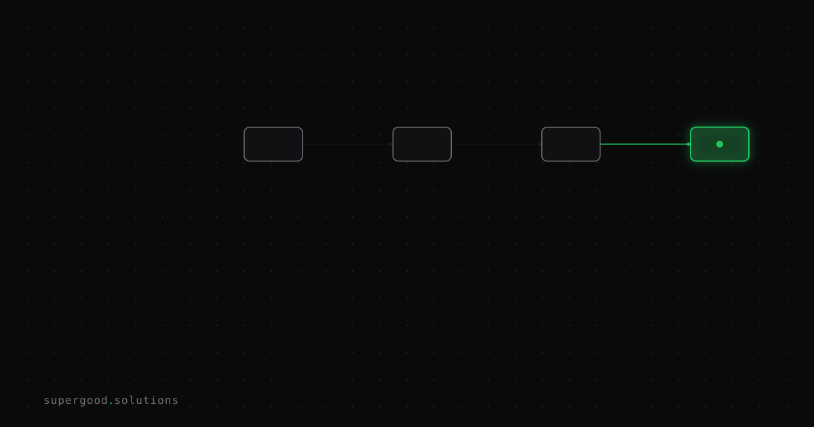

Your Agentic RAG System Is Not a Retrieval Problem
TL;DR: When production agentic RAG underperforms, teams reach for the vector store tuning knobs first — chunk size, embedding models, similarity thresholds. Bayer's PRINCE case study makes it plain: the real failure is in the orchestration layer that decides how to retrieve, not the retrieval layer itself.
Key Insight
Every team I've seen hit a wall with agentic RAG does the same thing: they open the chunking config.
They split at 512 tokens instead of 256. They try a better embedding model. They add a reranker. Six sprints later, precision ticks up 3 points on their eval set and falls apart the moment a real user asks a multi-hop question about data that spans three internal repositories with inconsistent metadata.
The Bayer PRINCE system — an agentic RAG platform that lets pharmaceutical scientists query decades of preclinical drug-safety reports in plain language — ran into this exact wall. Their published case study, written up on Martin Fowler's site, names the actual load-bearing discipline: harness engineering.
Not context engineering. Not embedding quality. Harness engineering: orchestration, tool boundaries, state persistence, retries, fallbacks, validation gates, reflection loops, and observability. The scaffolding that determines what the agent does when a retrieval step doesn't land.
That's the part most teams leave as an afterthought.
Why Teams Miss This
Because retrieval failures are visible and orchestration failures are subtle.
When your vector search returns irrelevant chunks, you see it in the answer — hallucination, wrong compound name, missing context. Easy to blame the retriever. You instrument cosine similarity scores and tweak.
When your orchestration fails, you get something that looks almost right. The agent retrieved three of the four relevant documents. It stopped re-querying too early because its sub-query decomposition treated a compound question as a single-hop lookup. It never issued the follow-up retrieval that would have caught the conflicting result. The answer sounds confident and is 70% correct, which is worse than a clear failure.
Bayer's data environment makes this concrete. Their preclinical study reports span decades, multiple system migrations, and years of metadata decay — structured annotations that are incomplete, missing, or just wrong. The "gold standard" answer always lives in the unstructured PDF. An agent hitting that corpus with a single semantic lookup and calling it done will fail, not because the embedding is bad, but because the question required multiple retrieval passes with intermediate reasoning to surface what the researcher actually needed.
The orchestration bug, not the vector store bug.
How to Actually Do It
The PRINCE team framed their solution around two concepts worth stealing directly:
Context engineering: Controlling what information each model sees at each step — not just the retrieved chunks, but what prior steps surfaced, what was ruled out, and what context moves between a research agent, a reflection agent, and a writing agent.
Harness engineering: The scaffolding that wraps every retrieval step — when to retry, what fallback query to issue, how to validate before moving to the next step, when to surface uncertainty to the human reviewer.
Here's the orchestration pattern that breaks things in practice and how to fix it:
# Naive pattern: one-shot retrieval, trust the result
def answer_question(query: str) -> str:
chunks = vector_store.search(query, top_k=5)
return llm.generate(query, context=chunks)
# Agentic pattern: decompose, retrieve, reflect, re-query
def answer_question(query: str) -> str:
sub_queries = planner.decompose(query) # break multi-hop Q into steps
gathered = []
for sq in sub_queries:
result = vector_store.search(sq, top_k=5)
if reflector.is_sufficient(sq, result): # validate each retrieval step
gathered.extend(result)
else:
# rewrite the sub-query and try again, or flag for human
result = vector_store.search(
rewriter.rephrase(sq, gathered), top_k=5
)
gathered.extend(result)
return llm.generate(query, context=deduplicate(gathered))The reflector.is_sufficient() call is where most teams have a gap. It should check:
- Coverage — does the retrieved context actually address the sub-query, or just keyword-match it?
- Conflict detection — do any retrieved chunks contradict each other? If yes, that's a signal to retrieve more before generating.
- Completeness under known data distribution — for a domain like pharmaceutical research, if you're asking about a study compound and retrieved zero toxicology results, that's a retrieval failure worth retrying rather than generating "no toxicology data found."
The third one is domain-specific and requires you to encode knowledge about your data distribution into the reflection step. No off-the-shelf retriever does this for you.
What We've Learned
Before your next sprint on chunk size or embedding model, audit your orchestration logic against two questions:
- What does your agent do when the first retrieval pass returns low-confidence chunks? If the answer is "it generates anyway," you have a harness problem.
- Does your agent decompose multi-hop questions into separate retrieval steps with intermediate validation? If the answer is "the LLM handles that in the prompt," you have a harness problem.
Fix those two before touching chunk_size.
If you're starting fresh: read the Bayer PRINCE case study and the accompanying Frontiers in AI paper. It's one of the most honest production write-ups in the agentic RAG space — not a tutorial, a postmortem on the engineering tradeoffs that actually matter at scale.
Sources
- Building Reliable Agentic AI Systems (Bayer PRINCE case study): Bayer + Thoughtworks case study on martinfowler.com — harness engineering as the core discipline
- PRINCE: Frontiers in Artificial Intelligence paper: full product evolution and business impact behind the PRINCE system
- Agentic RAG: The 2026 Production Guide: five production patterns, framework comparison, and cost reality check
- Enterprise RAG Architecture: A Practitioner's Guide: decision framework for when agentic orchestration is and isn't justified